Hata No Kokoro Online
A brand new world awaits!
Friendly Community
Navigate through Rune Midgards and relive the nostalgia of Pre-Renewal
War of Emperium
Bring your friends and start your own guild to conquer the world!
Server Rates
7x Exp, 35x Drops, 10x Mvp
Quality of Life
Many Quality of life features available including linked kafras, helpful @ commands, resets, and much more!
Balancing Changes
Many classes have been rebalanced to ease the strain on skill trees, as well as enhancements to how some skills work.
Swordsman Class Changes.
- Swordsman
- Magnum break scales up after cast delay by level
- Endure hits scale up based on vit up to 16 hits
- 1h sword/2h sword masteries do more damage and hit rate
- Knight
- Remove gutterlanes
- Spear mastery has increased damage and hitrate
- Pierce has more range and less cast time
- Spear stab has more range
- 2Hand quicken gives more crit, flee, and perfect dodge
- 1Hand quicken gives more def and mdef
- Crusader
- Faith has been reduced to level 5
- Demon's Bane and Angelic Protection have been removed
- Providence can be self casted and gives dark, holy, and undead resistance, only requires level 1 cure
- 2 hand quicken can be used with 1hand spears, but gives 2hand spear more crit and flee
- holy cross damage has been increased when using a 2hand spear
- Devotion does not need grand cross anymore, and works with a party 15 levels apart
- Lord Knight
- Spiral pierce only requires level 5 spear mastery
- LK Concentration gives 20% more attack
- Paladin
- Gospel can move with the chant simlar to songs
- Matry's reckoning damage increases based on vit
- Pressure after cast delay reduced
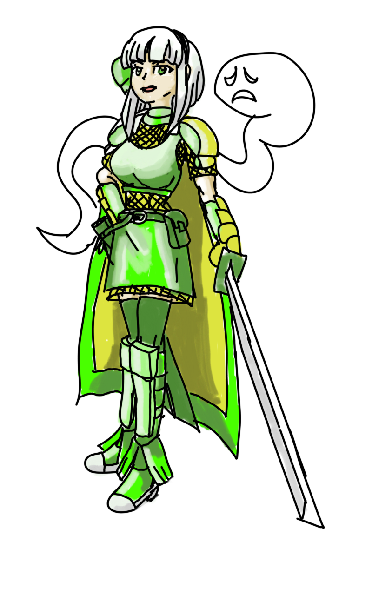
Acolyte Class Changes.
- Acolyte
- Teleport cool down is 0ms, heal now is on cooldown and is reduced time
- Agi Up has less after cast delay
- Pneuma only requires lvl 2 teleport
- Squash signum/decrease agi/angelus into 5 points instead of 10
- Angelus has less after cast delay
- Angelus doubled for each level
- Signum has reduced cast and after cast delay and
- Holy light requires less cast time and after cast delay
- Blessing only requires level 3 divine protection
- Demon Bane damage ratio increased
- Divine Protection slightly reduces more damage
- Priest
- Knuckles, Mace, and Books are slightly faster
- Impositio after cast delay reduced and increases matk
- Aspersio has less after cast time and less cooldown
- Status Recovery has less after cast delay
- Sanctuary has less cast time and less after cast delay
- Slow poison can't be interrupted and stops bleed effect
- Kyrie has less cast time and less after cast and takes more hits based on party size
- Magnificat less cast time and less after cast delay
- Gloria has less after cast delay and lasts a longer amount of time
- B S Sacramenti now is a castable AOE attack and costs 5 holy water, range scales up with level
- Turn Undead has less after cast delay and can damage normal mobs based on matk * 2 and crit * 3
- Magnus Exorcism has less cast time and more hits at lower levels and uses a blue gem at lvl 4-10 and can hit normal mobs for less damage
- Mace Mastery has additional hitrate and damage when equiped with a mace
- Monk
- Maces are slightly faster
- Triple attack can be freely casted with a slight after cast delay and can be chained into a combo
- Triple attack proc rate is increased by 10% with knuckles and 2h maces, 5% with 1h mace, and 1% per ironhand level
- Combo finisher has a slightly improved skill rate
- Steel body has slightly less aspd penalty
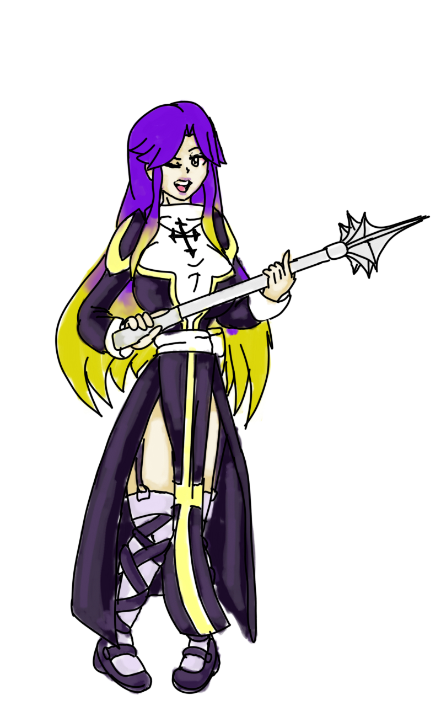
Archer Class Changes.
- Archer
- DS consumes 10-18 sp based on level
- Arrowshower has greater knockback and uses 10 arrows, can be casted with whips and instruments
- Improve concentration decreased sp cost, but only gives a fixed amount of dex/agi
- Hunter
- Blitz now scales higher with int and dex
- Elemental traps scales higher with int and dex
- Blitzbeat does 2 2 4 4 6 6 8 8 9 10 hits according to level
- Ankle Snare requires 3 traps and has a short cooldown
- Bard and Dancer
- Songs get full walk speed regardless of link
- Arrowshower can be used with instruments and whips
- Fortune/Humming/Slow Grace/Apple/Sinx/Whistle songs only require level 1 dissonance/ugly dance
- arrow throw can be used during song at lvl 5 or higher dancing/music lessons level
- Fortune adds more to crit, Humming adds more hit and uses less sp, Whistle adds more flee and uses less sp
- Clown and Gypsy
- Arrow vulcan has a short after cast walk delay that scaled by level and can be cast while playing a song
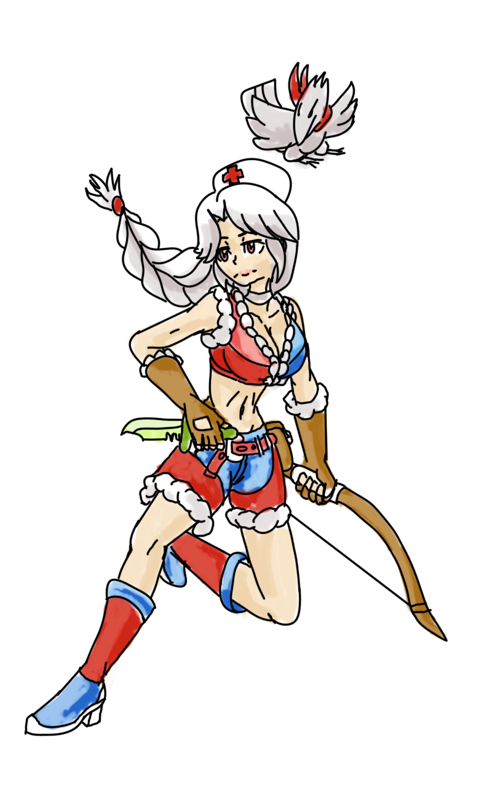
Thief Class Changes.
- Thief
- Throw stone increases on str
- Envenom skill ratio increased and requires less sp
- Detox uses less sp
- Rogue
- Gangster Paradise only requires level 1 divest helm
- Reduce flag graffiti to 1 point
- Raid skill ratio increased
- Sword mastery increases hitrate and damage with swords and knives
- Assassin
- Sonic blow has a shorter after act delay
- Enchant Poison has more range and less sp cost
- Poison React has less sp cost and requires level 1 enchant poison, skill ratio increased
- Venom dust uses red gem lvl 4 and higher and uses level 3 enchant poison
- Venom splasher uses red gem lvl 4 and higher
- Poison has slightly lower tick rate for more damage over time
- Katar mastery has higher damage and hit rate
- Assassin Cross
- Create deadly poison is based on base level and job level + luk up to 99
- Soul Destroyer is now affected by advanced katar mastery
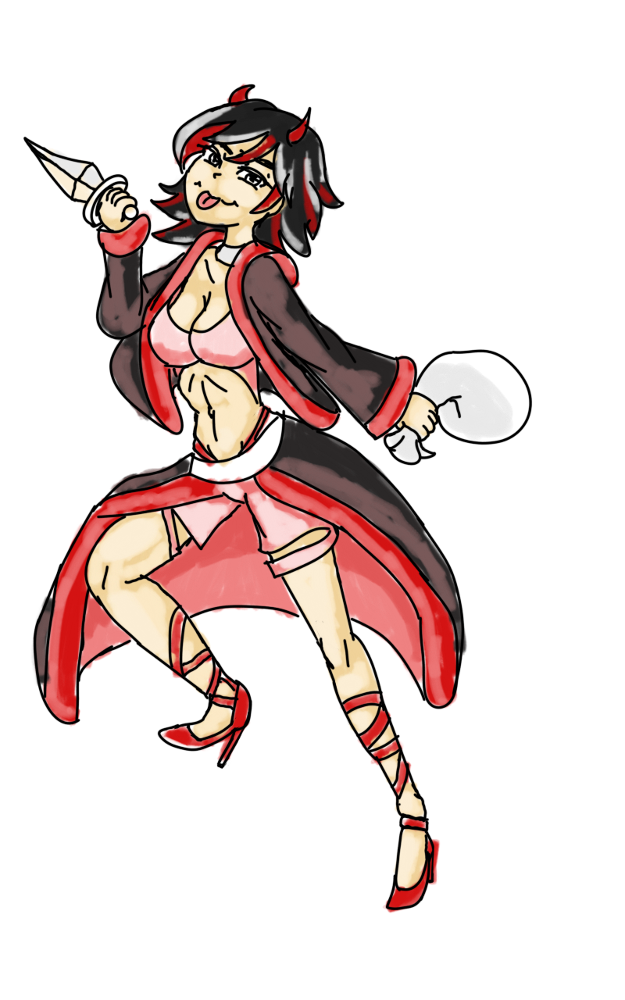
Merchant Class Changes.
- Merchant
- Reduce mammo cost by 50% if discount is lvl 5 or higher
- Cart revo has more splash attack range and 1.2% damage per weight
- Loud uproar is now a party buff and has a slight cast time and cooldown
- Blacksmith
- Forging requires less mats to forge weapons
- Forging skills has no pre-reqs and 1 point per skill
- Overthrust does not break weapons
- Iron/steel/enchanted stone are level 1 and changed to handle lower level
- Hilt bind slightly increases attack
- Greed has a greater range
- Forging success rate scales on job level, base level, and by luk
- Weapon research increases damage and hit based on skill level
- Hammer fall has slightly longer range
- Alchemist
- Creating bombs and mats require less materials
- formula for potion/mat creation is based on base level, job level, with int and luk
- Acid terror doesn't require mats at level 2 and deals additional hits per level 2 3 3 3 4
- Demonstration time reduced, hit interval shortened, skill ratio increased for more damage ticks over time
- Axe Mastery increases hitrate and damage
- Whitesmith
- Cart Term can be used with meltdown and other equip breaking skill, ignores defense
- Cart Term cost can be reduced with level 10 discount and unfair trick
- Max overthrust costs 500 less zeny
- Upgrade weapon is condensed to level 5 with each level allowing for levelx2 refine up to 10 at level 5
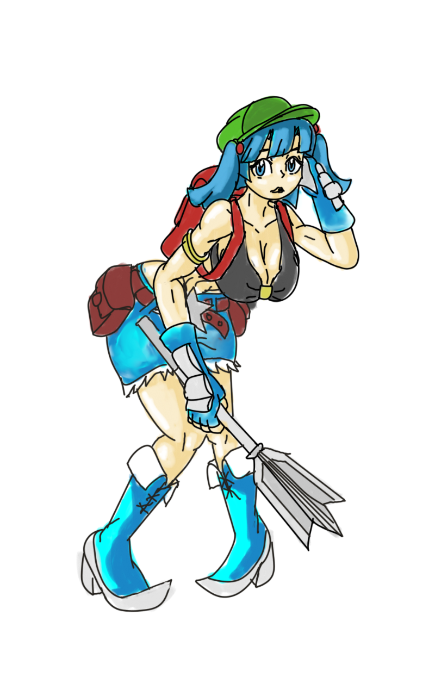
Mage Class Changes.
- Mage
- SP recovery decreases after cast delay by 1% per level (also for priest)
- Napalm has a larger splash range
- Frost diver requires level 4 cold bolt has a shorter after cast delay
- Soul strike requires lvl 1 napalm
- Safety wall only requires 1 point of napalm and lvl 5 soul strike
- Safety wall 10 has even less cast time but more sp cost (also for priest)
- Thunderstorm does 100% damage based on the skill ratio
- Wizard
- Fire pillar has less after cast delay at higher level
- Sight thrasher has less after cast delay
- Meteor has more meteor hits at lower levels
- Frost nova has reduced cast time by level with lower after cast delay and has larger splash range
- Sage
- Daggers and books are slightly faster
- Spell breaker requires less cast time
- Hindsight requires less cast time and has a higher chance to proc
- Bolt spells can be casted up to 3/5ths of the max level learned at lvl 6
- Soul strike up to 3/5ths at lvl 8
- Napalm can be casted up to level 10 at lvl 1
- Fireball can be casted to lvl 5 at lvl 9 and 5 at lvl 10
- Frostdiver can be casted to lvl 3 at lvl 10
- Land protector only requires level 2 of volcano/wirlwind/deluge
- Dragonology gives up to 5% mdef pierce to dragon race
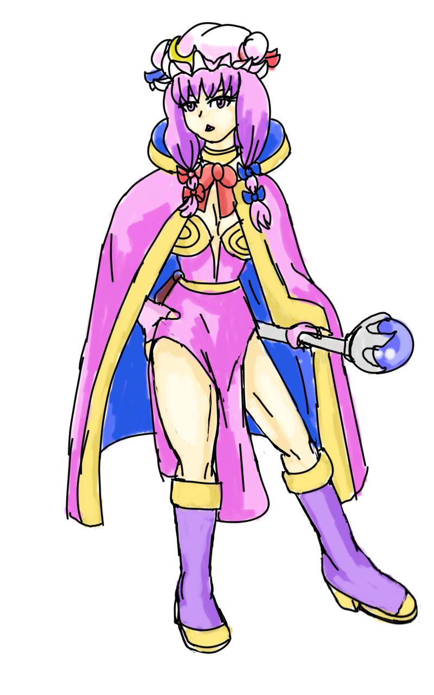
Gunslinger Changes
- Triple shot range scales on snake eyes level and uses less sp
- Ghost bullet scales on matk and range scales on snake eyes
- Tracking cast time is reduced based on level (not dex) and range is increased based on snake eyes level with reduced sp cost
- Disarm range scales on snake eyes level
- Coin skills do not require any skills from other trees
- Coin flip does not reduce spheres on failure
- Cracker scales on snake eyes
- Gatling fever gives +5 aspd on top of the lvl aspd bonus
- Coin fling damage scales on str
- Accuracy increase has reduced sp cost, gives critical rate, and can be cast on all party members, costs 5 coins
- Dust has a slight range increase
- Spread attack has greater splash range at higher levels
- Rebellion guns and ammo is now available at gunslinger vendor
- AP Ammo, Sanctified Bullet - lvl 90, Blazing/Freezing/Electric/Stone Ammo - lvl 70
- Gatling attack speed increased near fist attack speed
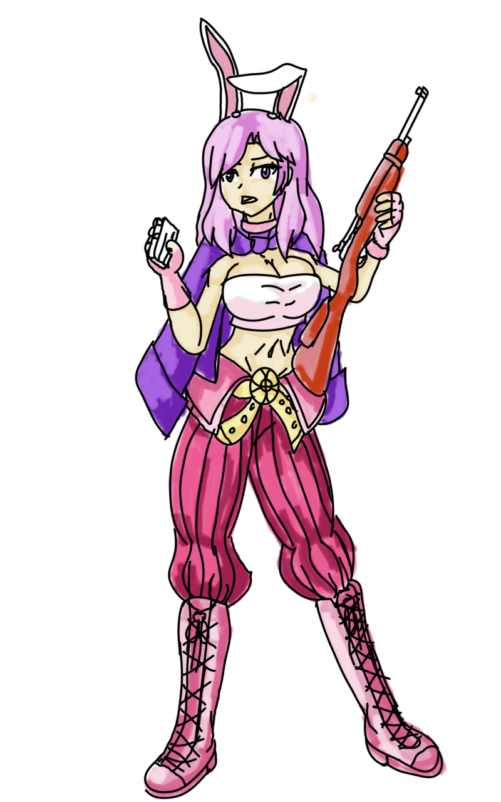
Ninja Changes.
- Throw huuma shuriken has shorter cast/after cast delay, damage no longer splits
- Throw zeny costs less except lvl 10
- Mirror image/fire formation/fire dragon/ice meteor/lightning strike is free at lvl 1-3
- Vanishing slash has reduced sp cost
- Shadow jump 5 has a range of 18
- Ninja mastery gives 1% mdef pierce per level up to 5%
- Throwing practice gives 1% def pierce per level up to 5%
- Killing strike lvl 10 can absorb 10% HP/SP on attack
- Ninja can now use some one hand swords (attack speed adjusted to be slower than knife):
- Tsurugi
- Haedonggum
- Platinum Shotel
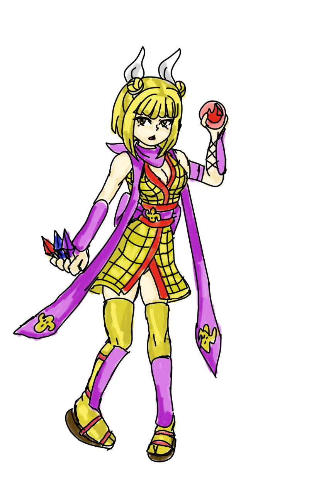
Star Gladiator Changes.
- Protection requires base level + job level + luk to scale
- Wrath requires base/job+luk
- The 2 hp/sp costs of skills has been reduced to 1hp/sp
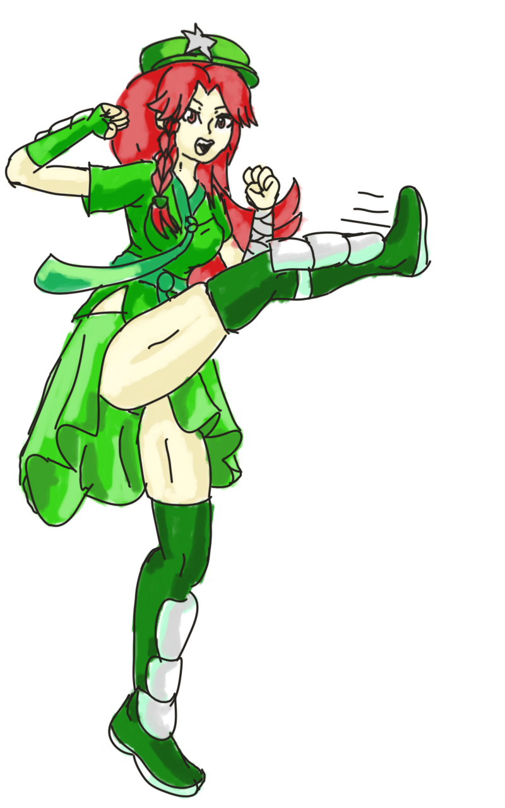
Soul Linker Changes.
- Fists and daggers are faster
- Links can not be dispelled
- Knight link magnum break does extra damage
- Sage link double mdef pierce to dragons with dragonology
- Alchemist link max axe mastery does not miss
- TKM link while spurt is active increase hp/sp regen by 35%
- SL passively gets +10 crit
- Passive Link increases to Soul Linker:
- Hunter link passively increases SL maximum range
- Bard/Dancer link gives SL -10% sp cost
- Blacksmith link gives SL +25 hit
- Soul linker link gives SL up to +10% mdef pierce
- SN link gives SL +5 to all stats
- Trans 1st class - +30% hp/sp regen
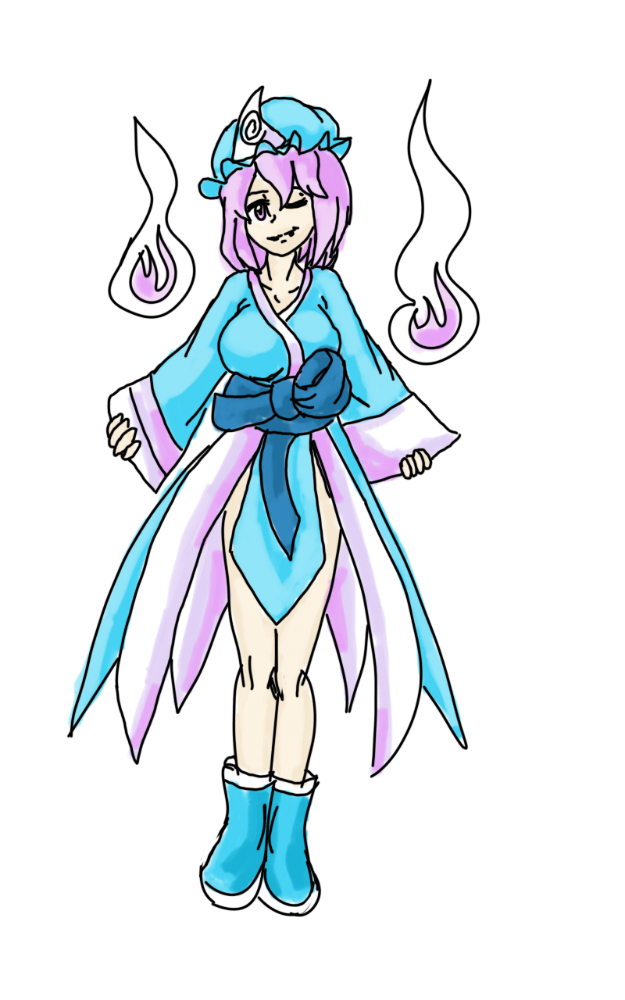
Super Novice Changes.
- Any changes above for first jobs are also applied to super novice, plan accordingly
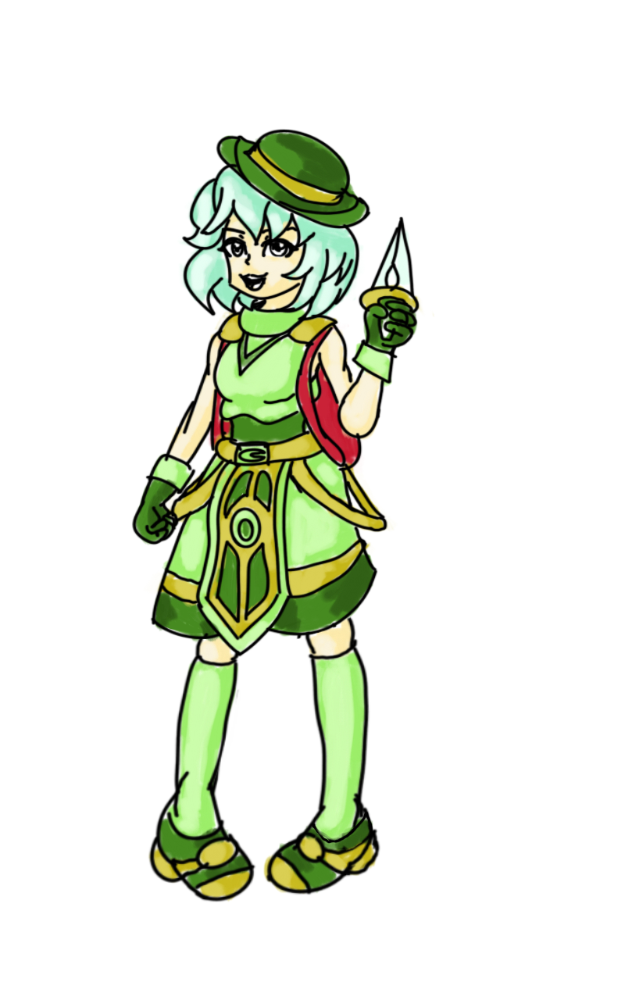